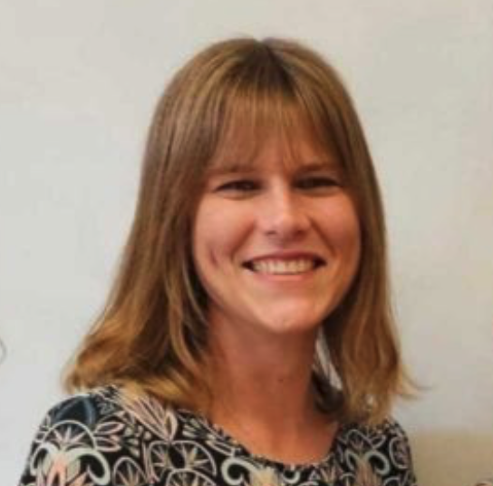

1
 Louis Portal
Zurigo
Eletto 2021, Consolare & ASFE
Louis Portal
Zurigo
Eletto 2021, Consolare & ASFE
2
 Marie Galy-Dejean
Zurigo
Educazione, Comunità & Giuridico
Marie Galy-Dejean
Zurigo
Educazione, Comunità & Giuridico
3
 Nourane Aleyan
Berna
Associazioni, Comunità & Berna
Nourane Aleyan
Berna
Associazioni, Comunità & Berna
4
 Elisabeth Lefebvre
Zurigo
Associazioni, Lavoro & Comunità
Elisabeth Lefebvre
Zurigo
Associazioni, Lavoro & Comunità
5
 Benjamin Delahaye
Zurigo
Educazione, Comunità & Commedia
Benjamin Delahaye
Zurigo
Educazione, Comunità & Commedia
6
 Déborah Schiestel
Basilea
Farmaceutica, Lavoro & Basilea
Déborah Schiestel
Basilea
Farmaceutica, Lavoro & Basilea
7
 Thierry Cerclé
Lugano
Consiglio comunale, Lavoro & Ticino
Thierry Cerclé
Lugano
Consiglio comunale, Lavoro & Ticino
8
 Fabiola Jaymond
Zurigo
Associazioni, Startups & Lavoro
Fabiola Jaymond
Zurigo
Associazioni, Startups & Lavoro
9
 Jean-Marc Lherminé
Berna
Lavoro, Pensione & Berna
Jean-Marc Lherminé
Berna
Lavoro, Pensione & Berna
10
Ingrid Kobler
Coira
Educazione, Famiglia & Grigioni

11
 Pascal Ravery
Zug/Baar
Finanza, Lavoro & Carriera
Pascal Ravery
Zug/Baar
Finanza, Lavoro & Carriera
12
 Sophia Vinçonneau
Vaduz 🇱🇮
Salute, Famiglia & Liechtenstein
Sophia Vinçonneau
Vaduz 🇱🇮
Salute, Famiglia & Liechtenstein
Per votare
- Iscrivetevi alla Lista Elettorale Consolare (LEC) entro il 24 aprile 2026 ➔
- Voto elettronico online dal 22 al 27 maggio 2026
- Voto all'urna il 31 maggio 2026 al Consolato Generale di Francia a Zurigo
- Voto per delega possibile